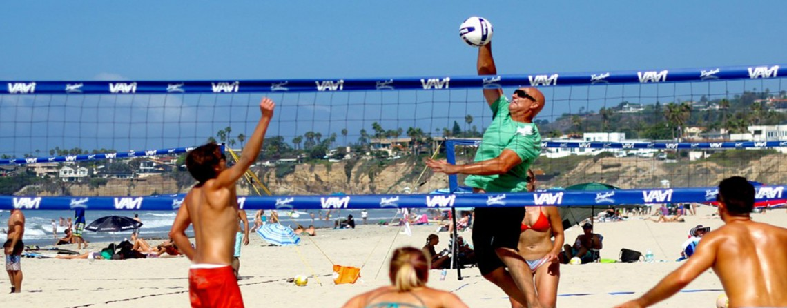

Le volley-ball, ou volleyball, est un sport collectif mettant en jeu deux équipes de six joueurs séparés par un filet, qui s'affrontent avec un ballon sur un terrain rectangulaire de 18 mètres de long sur 9 mètres de large. Avec 269 millions de pratiquants, il s'agit d'un des sports les plus pratiqués dans le monde
Le volley-ball a été inventé le 9 février 1895 aux États-Unis par un professeur d’éducation physique des UCJG (YMCA), à Holyoke dans le Massachusetts, William G. Morgan (1870-1942), afin d'occuper les athlètes pendant l'hiver. C'est en s'inspirant à la fois du basket-ball et également du tennis qu'est née la « mintonette », le 2 décembre 1895. Un autre sport de salle, le basket-ball, a été inventé juste dix miles (seize kilomètres) plus loin dans la ville de Springfield (Massachusetts), seulement quatre années auparavant. La mintonette se devait d'être un sport de salle moins violent que le basket-ball, pour les membres les plus âgés du Young Men's Christian Association, tout en exigeant toujours un minimum d'effort physique.Les premières règles, écrites par William G. Morgan, instauraient un filet de 1,98 m de hauteur, un terrain de 7,6 par 15,2 m, et un nombre de joueurs illimité. Un match était composé de neuf tours avec trois services pour chaque équipe dans chaque tour, avec un nombre de contacts avec la balle illimité pour chaque équipe avant son renvoi à l'adversaire. En cas d'une erreur de service, un deuxième essai était permis. Le fait de frapper la balle dans le filet était considéré comme une faute (avec la perte du point ou d'un temps-mort) sauf si cela se passait à la première tentative de service. Après avoir observé ce sport, Alfred Halstead remarqua la nature de « volée » dans le jeu à son premier match d'exhibition en 1896. Joué à l'International YMCA Training School (aujourd'hui appelé Springfield College), le jeu fut rapidement connu sous le nom de volley-ball (il a été à l'origine orthographié en deux mots: « volley ball »). Les règles du volley-ball furent légèrement modifiées par l'International YMCA Training School et la propagation du jeu dans les UCJG (YMCA) différents.
Le volley-ball de plage est une variante, avec des règles moin strict, plus amusante que le volley-ball traditionel. Il se joue sur un grand caré de sable avec des amis. Chaque personne on leurs variantes des règles car l'on n'attribut pas d'importance a la competition, mais plus a l'amusement.
